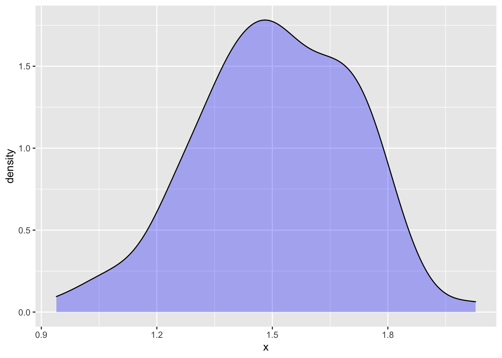

library(math300)List of learning checks
This list is assembled from the individual-lesson learning check files in the LC/ directory. Make any changes in that directory.
In draft: Data, temporarily
Several of the problems refer to datasets in the LC/data subdirectory and documented in LC/data/explain.qmd. These should eventually be moved to the math300 package. [Actually, not so many. Several of the examples from CSP refer to csv files, but those data are also available through the openintro or other packages.]
Non-technical resources
These are resources that can be used for an essay/reading exercise or class discussion.
pudding.cool
Examples:
- Chinese censorship of the Big Bang Theory
- Comparing pocket sizes on women’s and men’s clothing
- How artists get paid from music streaming
- Randomness and age. Perhaps suitable for Lesson 38 on “false discovery.”
- Coughing and the Academy awards (The link was through <pudding.cool>.)
- NBA draft
- Writing plainly
- many others!
NYT “What’s going on with this graph?”
Lesson 19
Setup
The math300 package will be needed for lessons 20 through 39.
19.1 (Objective 2)
What are the two settings for decision making that we cover in this course?
Give an example of each.
Solution
- Prediction and (2) Relationship
What will be the sales price of this house? “This house” is a shorthand way of saying “a house with these attributes.” The sales price will be the output of a prediction function that takes the various attributes as input and produces a sales price as output.
If I look for a house with an additional bathroom, how much will that change the sales price? This asks for the relationship between number of bathrooms and sales price.
19.2 (Objective 2)
For each of these research questions, say whether it is a prediction setting or a relationship setting.
- What’s the risk of falling ill?
- How will the risk of falling ill change if we eat more broccholi?
- Is there any reason to believe, based on the evidence at hand, that we should look more deeply into the possible benefits of broccholi?
Solution
- Prediction
- Relationship
- Relationship
19.3
Fit a model to some data. Write down the function implied by the coefficients.
Evaluate the function for:
- a=7, b=9
- and so on.
Solution
19.4
About the summarization of models. Pipe the model fit into any of four functions:
%>% coefficients()%>% broom::tidy()%>% rsquared()%>% confint()
REDO confint() so that the columns are named lower, middle, upper
Solution
Lesson 20
20.1
?@sec-size-of-variable describes two very closely related summary quantities used to measures of the “size” of a variable: i. the variance and ii. the “standard deviation” (which is the square root of the variance.
- Using software, what is the variance of the XXX variable in the YYY data frame? Make sure to include the units.
- What is the “standard deviation” of the XXX variable? Calculate this in two different ways: i. “by-hand” taking of the square root of the variance; ii. using the
sd()software directly.
[Repeat for a number of variables from different data frames.]
Solution
20.2
Solution
Lesson 21
21.1
The following command will generate a data frame with 1000 rows from dag00 and calculate the variance of the x and y variables:
sample(dag00, size=1000) %>%
summarize(vx = var(x), vy = var(y))# A tibble: 1 × 2
vx vy
<dbl> <dbl>
1 3.80 0.988Compare this result to the DAG tilde expressions
dag00[[1]]
x ~ eps(2) + 5
[[2]]
y ~ eps(1) - 7
attr(,"class")
[1] "list" "dagsystem"In the tilde expressions, eps(2) means to generate noise of magnitude 2.0.
- Is the argument to
eps()specified in terms of the variance or the standard deviation? - The tilde expression for
xspecifies that the constant5is to be added toeps(2). Similarly, the constant-7is added toy. How do these constants relate to the calculated magnitudes ofxandy?
Solution
- The standard deviation. For instance,
xhas noise of magnitude 2. The variance ofxis 4, the square of 2. - The standard deviation (and therefore the variance) ignore such added constants.
21.2
?@sec-signal-and-noise introduces the idea that variables consist of components. A simple breakdown is into two components: i. the part of the variable that is determined by other variables in the system (“signal”) and ii. the random part of the variable (“noise”). The section uses dag01 as an illustration of how a variable can be partly determined and partly random noise.
Write and execute a command that will generate 500 rows of simulated data from
dag01and will calculate the standard deviation ofxand ofy.What’s the magnitude of
xin the simulated data? What’s the magnitude ofy?Does this change if you use data with 1000 or 20000 rows?
Solution
sample(dag01, size=500) %>% summarize(sx = sd(x), sy=sd(y))- The standard deviation of
xis about 1, the standard deviation ofyis about 1.8. - No, the values are roughly the same regardless of the size of the sample.
21.3
[DRAW several DAG-like graphs, one of which should be undirected in all edges, one should be undirected on one or two edges (but not all), and one should be cyclic and another acyclic.]
Referring to the graphs in the figure, say which ones are DAGs. If a graph is not a DAG, say whether that’s because it’s not directed or because it’s not cyclic.
Solution
21.4
Generate simulated data from dag01 with 1000 rows. Fit the regression model y ~ x to the data and examine the coefficients.
How do the coefficients relate to the tilde expressions that define
dag01?Instead of using the regression model
y ~ x, whereyis the response variable, try the regression modelx ~ y. Do the coefficients fromx ~ ycorrespond in any simple way to the tilde expressions that definedag01?
Solution
sample(dag01, size=1000) %>%
lm(y ~ x, data = .)
Call:
lm(formula = y ~ x, data = .)
Coefficients:
(Intercept) x
3.980 1.489 The intercept corresponds to the additive constant (4) in the y tilde expression. The x coefficient corresponds to the multiplier on x in the tilde expression.
The formula for x isn’t reflected by the coefficients.
Using x as the response variable:
sample(dag01, size=10000) %>%
lm(x ~ y, data = .)
Call:
lm(formula = x ~ y, data = .)
Coefficients:
(Intercept) y
-1.8510 0.4613 These coefficients do not appear in the dag01 tilde expressions.
21.5 (Objective 21.2)
You are trying to understand why automobile fuel economy varies from model to model. Using the mtcars data frame (documentation at help("mtcars")) …
- What’s an appropriate choice of a response variable?
- Pick two explanatory variables of interest to you. Build an appropriate model from the data, extracting the
coefficients()of the model. Explain what the coefficients mean in everyday terms that your cylinder-head uncle would approve of. - Which of the other variables are covariates? iv.Pick a covariate that your intuition suggests would be important. Include that covariate in the model from (ii) and say whether the covariate shows up as important in the model coefficients.
Solution
- All of the other variables are covariates. A covariate is merely a potential explanatory variable that you are not directly interested in. Of course, not all covariates play an important role in the system.
21.6 (Obj 21.3)
Generate a sample of size \(n=100\) from dag03. Use the data to construct a model of y versus x. But instead of using coefficients() to look at the model coefficients, use confint(). While coefficients() reports a single value for each coefficient, confint() reports a plausible interval for coefficients that is consistent with the data.
- For \(n=100\), how wide is the interval reported by
confint()on thexcoefficient. - Repeat the process of sampling and modeling, but this time use \(n=400\). How wide is the interval reported by
confint()on thexcoefficient. - Again repeat the process of sampling and modeling, this time using \(n=1600\). iv. Does the interval reported depend systematically on the size \(n\) of the sample? Describe what pattern you see.
Lesson 22
22.1 (Obj 20.3)
Consider these three data frames:
One <- sample(dag01, size=25)
Two <- do(10) * {
lm(y ~ x, data = sample(dag01, size=25)) %>%
coefficients()
}
Three <- Two %>%
summarize(mx = mean(x), sx = sd(x))- Both
OneandTwohave columns calledx, but they stand for different things. Explain what the unit of observation is and what the values inxrepresent.. Threedoes not have a column namedx, but it is a summary of thexcolumn fromTwo. What kind of summary.
Solution
- In
One, thexcolumn contains the simulated of thexvariable fromdag01. The unit of observation is a single case, for instance a person for whom observations were made ofxandy. The simulation involves generating 25 rows of data: one row for each of 25 people. - In
Two, thexcolumn is the regression coefficient onxfrom the simulation. Each row ofTwocorresponds to one trial in which regression is being performed on a sample of size 25 of simulated data fromdag01. Threeis a summary of the 10 trials inTwo. The columns, namedmxandsx, tell about the distribution ofxacross all the trials.
22.2 (Obj 21.3)
Part 1
You are going to write a procedure that automates the following process:
- sampling from a DAG, specifically
dag01, usingsample()with a size of 25. - fitting a model
y ~ xusinglm() - reporting the coefficient on
xusingcoefficients().
Call the procedure proc1().
To do this fill in the following template in your Rmd document:
proc1 <- function() {
# your statements go here
}Once you have proc1() ready, you can carry out the procedure by giving a simple command:
proc1()Part 2
Now that you have proc1() ready and have tried it out, you are going to run the procedure 100 times repeatedly and look at the distribution in the x coefficient.
Of course, you could laboriously give the command proc1() 5 times, and write down the x coefficient each time. Far better, though, to automate the process of repeating and collecting the x coefficient.
You can do this easily by using do(5) in conjunction with proc1().
What’s the form in which the coefficients are collected when using
do()?Is the
xcoefficient the same from trial to trial? Explain why or why not.Change your statement to run 100 trials rather than just 5, and to store the collected results in a data frame called
Trials. Use appropriate graphics to display the distribution of thexcoefficient. Summarize the distribution in a sentence or two.Create a consise summary of the
xcolumn ofTrialsusingsummarize()withsd(x)to calculate the standard deviation. Compare the size of the standard deviation to the graphical display in (3).
Solution
Part 1
proc1 <- function() {
Dat <- sample(dag01, size=25)
Mod <- lm(y ~ x, data = Dat)
coefficients(Mod)
}or, more concisely ::: {.cell}
proc1 <- function() {
sample(dag01, size=25) %>%
lm(y ~ x, data = .) %>%
coefficients()
}Part 2
do(5) * proc1() Intercept x
1 4.266070 1.459328
2 3.915543 1.468711
3 4.007378 1.348216
4 4.028383 1.801927
5 4.052263 1.771596The results of the five trials are collected into a data frame.
The
xcoefficients varies from trial to trial.
Collect 100 trials
Trials <- do(100) * proc1()- An appropriate graphical display of the trials:
ggplot(Trials, aes(x)) + geom_density(fill="blue", alpha=0.3)
The x coefficient varies from near 0.5 to near 2.5 in a bell-shaped form.
- Summarize the trials by the standard deviation.
Trials %>% summarize(s = sd(x)) s
1 0.2023714The standard deviation is about 1/4 the width of the distribution.
Lesson 23
23.1
Vocabulary: Sampling distribution, standard error, sampling variability, sample size
Solution
23.2
In LC 22.2, using do(100), you displayed the sampling distribution on the x coefficient of the model y ~ x applied to data simulated from dag01. Among other things, you calculated the standard deviation of the sampling distribution. Copy over the proc1() you wrote for LC 22.2 into your Rmd document for this lesson.
Calculate the standard deviation of the sampling distribution in each of these situations.
| Number of trials | Sample size |
|---|---|
do(100) |
size=25 |
do(100) |
size=100 |
do(100) |
size=400 |
do(500) |
size=25 |
do(500) |
size=100 |
do(500) |
size=400 |
In each case, the standard deviation is somewhat random, since new simulated data is collected from dag01 each time. Nonetheless, there is a systematic pattern to how the standard deviation varies with the number of trials and with the sample size.
Describe how the standard deviation of the sampling distribution of the
xcoefficient varies with sample size. The general trend should be easy to see.Does the standard deviation of the sampling distribution depend on the number of trials?
Going back to your results from (1), try to find a simple quantitative relationship that describes how the standard deviation depends on sample size. State that relationship in words.
23.3
We’re going to build models of prices of books based on the moderndive::amazon_books data frame. For each model, you will calculate the confidence interval of one or more coefficients in two ways:
- Directly, using
confint(). - Indirectly, using
broom::tidy()
Model 1.
Model
list_priceversusamazon_price. Calculate the confidence intervals on the intercept and on theamazon_pricecoefficient.Interpret the
amazon_pricecoefficient in everyday words.
::: {.callout-note} ## Solution to part 1.
lm(list_price ~ amazon_price, data = amazon_books) %>% confint() 2.5 % 97.5 %
(Intercept) 3.716532 5.122737
amazon_price 1.049308 1.127471lm(list_price ~ amazon_price, data = amazon_books) %>% broom::tidy()# A tibble: 2 × 5
term estimate std.error statistic p.value
<chr> <dbl> <dbl> <dbl> <dbl>
1 (Intercept) 4.42 0.357 12.4 5.22e- 29
2 amazon_price 1.09 0.0199 54.8 2.82e-165You can read the confidence interval directly from the
confint()report. For the regression report, calculate the confidence interval as the estimate \(\pm 2\) times the “standard error.”Just to look at the
amazon_price()coefficient, the list price is about 8% higher than the Amazon price. Here, “about” means 5% to 13%. But don’t forget the intercept. The list price is, on average, about $4.50 higher than the 1.08 multiplier on the Amazon price.
Model 2.
- Model
list_priceversusamazon_price, includinghard_paperas a covariate.
Solution
lm(list_price ~ amazon_price + hard_paper, data = amazon_books) %>% confint() 2.5 % 97.5 %
(Intercept) 3.028400 4.466996
amazon_price 1.042536 1.117826
hard_paperH 1.786977 3.882884lm(list_price ~ amazon_price + hard_paper, data = amazon_books) %>% broom::tidy()# A tibble: 3 × 5
term estimate std.error statistic p.value
<chr> <dbl> <dbl> <dbl> <dbl>
1 (Intercept) 3.75 0.366 10.3 1.62e- 21
2 amazon_price 1.08 0.0191 56.5 9.65e-169
3 hard_paperH 2.83 0.533 5.32 1.93e- 7A hardcover costs about $2 to $4 more than a paperback.
Note in draft
Return to this example in the prediction lesson, to show how the confidence interval and the prediction interval are different.
Maybe also use it in one of the side-exercises on interaction terms. (The plan is not to strongly emphasize interaction terms but to refer to them in the occasional exercise.)
23.4 (Objective 23.1)
We’re going to work with a very short dataset so that you can see directly what resampling a data frame does. (Ordinarily, you use resampling on an entire dataset, but here we are trying to make a point about the mechanism of resampling.)
- Create a data frame
Fivethat consists of the first five rows ofmoderndive::mythbusters_yawn. (Hint: Usehead().) Put the code for doing this into your Rmd homework paper. Note thatFivecontains the data from subjects 1 through 5.
Solution
Five <- mythbusters_yawn %>% head(5)Use
resample()to generate a new data frame fromFive. At this point, you are just going to look at the result, processing it “by eye.” How many distinct human subjects are reported in the resampled data? (Your answer will likely differ from your classmates’, since resampling is done at random.)Repeat (2) ten times. Each time, count the number of distinct human subjects.
- Report those ten numbers on your write-up.
- There will usually be one or more subjects repeated in the output. Look at these repeats carefully to check whether the variables have the same value for all the repeats or whether sometimes a repeated subject has different values for
grouporyawn.
Solution
Most of the time there will be 2, 3, or 4 distinct subject. The balance of the five rows will be repeats of other subjects. When a subject is repeated, the entire row is identical for all instances of that subject.
Going further (optional). It’s pretty easy to automate the process of generating the resample and counting the number of distinct human subjects. Like this:
{resample(Five) %>% unique() %>% nrow()}[1] 3Using do(1000), carry out 1000 trials of this process, saving the overall results in a data frame named Trials. What is the mean number of unique human subjects across the 1000 trials? What fraction is this of the five subjects.
Do the same again, but instead of using Five, use the whole mythbusters_yawn data frame (which has 50 rows). What fraction of the 50 human subjects, on average, shows up in the resamples?
Solution
Trials <- do(1000) * {resample(mythbusters_yawn) %>% unique() %>% nrow()}
Trials %>% summarize(mn = mean(result)/nrow(mythbusters_yawn)) mn
1 0.6355423.5 (Objective 23.1)
Return to the amazon_books data frame and the model list_price ~ amazon_price. In Exercise 23.3 you used the regression report to calculate the confidence intervals on the intercept and on the amazon_price coefficient. Now you are going to repeat the calculation in a different way, using randomization, a process called “bootstrapping”.
The basic process is to train a model using resampled data, like this:
lm(list_price ~ amazon_price, data = resample(amazon_books)) %>% coefficients() (Intercept) amazon_price
3.367578 1.186836 Then, using do(500), carry out 500 trials, saving the result in a data frame named Trials.
Process Trials to calculate both the mean and the standard deviation of the intercept and amazon_price columns. How do those results compare to the “standard error” results from the same model (without resampling) as you found in LC 23.3?
Solution
SOMETHING IS WRONG HERE. The means are about the same as from the regression report (as they should be) but the standard deviations are 3-4 times larger. WHAT GIVES?
THE PROBLEM IS a handful of books where the Amazon price is very different from the list price, because the book itself is very expensive (e.g. $100). Remedy
- Switch to another data example, maybe doing both the regression report and the bootstrapping in one exercise.
- This is an object lesson in outliers. Since the dollar discount is presumably proportional to the price, we should have used log transforms.
Trials <- do(500) * {lm(list_price ~ amazon_price, data = resample(amazon_books)) %>% coefficients()}
Trials %>% summarize(m1 = mean(Intercept),
m2 = mean(amazon_price),
sintercept = sd(Intercept),
samazon_price = sd(amazon_price)) m1 m2 sintercept samazon_price
1 4.244438 1.101916 0.905587 0.07863811Lesson 24
Just to help when writing problems
24.1 Estimate an effect size from a regression model of one and two variables.
24.2 Construct a confidence interval on the effect size.
24.3. Gaming: Evaluate whether confidence interval indicates that estimated effect size is consistent with simulation.
SOME IDEAS FOR EXERCISE MODES
Use
mod_plot()and look at the slope of lines and offsets. Compare to the model coefficients.Generate data from a DAG and look at the confidence interval on the effect size. Then make new samples and see if the effect size in those samples is consistent with the confidence interval.
In text, maybe look at the confidence intervals across new samples and show that they tend to overlap. Only a few of them don’t touch a common line. This is basically just a review of confidence intervals, but why not?
Interaction. Show that when there is an interaction term, the effect size (as calculated by
mod_effect()) is not constant, as it is for models with purely linear terms.
LC 24.1
The Computational Probability and Statistics text describes an early study on human-to-human heart transplantation:
“The Stanford University Heart Transplant Study was conducted to determine whether an experimental heart transplant program increased lifespan. Each patient entering the program was designated an official heart transplant candidate, meaning that he was gravely ill and would most likely benefit from a new heart. Some patients got a transplant and some did not. The variable indicates which group the patients were in; patients in the treatment group got a transplant and those in the control group did not. [[Not in data set: Another variable called [MISSING] was used to indicate whether or not the patient was alive at the end of the study.]]”
The data frame is called Transplants. [NEED TO MOVE TO PACKAGE]
You’re going to build a model of outcome vs group based on the data in Transplants. The outcome variable has levels "Dead" and "Alive", that is, it is a two-level categorical variable. Consequently, the model output will be the probability that the transplant candidate was alive at the end of the study.
- Build a model
outcome == "Alive" ~ groupfrom theTransplantsdata. Pay close attention to the left-hand side of the tilde expression: it is a calculation that produces a 1 ifoutcomeis"Alive"and zero otherwise. Notice the double equal signs and the quotes around"Alive".
Solution
mod <- lm(outcome == "Alive" ~ group, data = Transplants)The sole explanatory variable here,
groupalso is categorical. It has levels"Control"and"Treatment".- Using
eval_mod(), find the probability of being alive at the end of the study for the Control group and for the treatment group. - The two probabilities in (ii) do not add up to zero. Explain why.
- Using
Solution
mod_eval(mod, group="Treatment") group model_output
1 Treatment 0.3478261mod_eval(mod, group="Control") group model_output
1 Control 0.1176471Find the effect size of the treatment. All you need is your results from (2)?
Use
mod_effect(modelname, ~ group)to calculate the effect size.- Is the result consistent with what you found in (3).
- Explain in everyday language what this effect size means.
Solution
mod_effect(mod, ~ group) change group to_group
1 -0.230179 Treatment Control24.2
In very simple settings, you don’t need access to the original data: a simple summary will do.
In draft
Use the data/bloodthinner.csv data from CPS chapter 19. Create the table of counts and calculate the effect size/probabilities from that.
Solution
Lesson 25
Just while in draft
25.1 Given a data frame, construct a predictor function for a specified response variable.
25.2 Use the predictor function to estimate prediction error on a given DAG sample and summarize with root mean square (RMS) error. Relate this to a predition interval.
25.3 Distinguish between in-sample and out-of-sample prediction estimates of prediction error.
25.2
The data frame moderndive::house_prices lists the sales prices of 21,613 houses in King County, Washington (which includes Seattle) sold from May 2014 and May 2015. Often, with price or income data, economists work with the logarithm of the price or income or income-related quantity such as house living area. We are going to do here, but this problem is not about logarithms, so once you create the “logged” data frame, you’ll just be modeling the data using the usual methods.
To create the “logged” data, add these two new variables to the data frame, which we will call Seattle.
Seattle <- moderndive::house_prices %>%
mutate(log_price = log10(price),
log_area = log10(sqft_living))- Build a model of
log_price ~ log_areausing theSeattledata. Store the model under the namepmod.
Solution
pmod <- lm(log_price ~ log_area, data = Seattle)- Imagine that you are moving to Seattle in August 2014. Housing is expensive in the Seattle area, so you might decide to live in a small house, say 750 square feet. The
log_areaof such a house is 2.87. Usingmod_eval(), predict thelog_priceof such a house. (Note thatmod_eval()puts the model output in a column namedmodel_output, notlog_price.) In your Rmd file, give the command and show the output. If you’re curious about what the predicted price is in dollars (rather than log-dollars), simply raise 10 to the log-dollar amount. For instance, if themodel_outputwere 5, the dollar amount will be \(10^5 = \$100,000\).
Solution
mod_eval(pmod, log_area = 2.87) log_area model_output
1 2.87 5.324298In dollar terms, the predicted price is 105.324 = 2.1086281^{5}.
Repeat (2), but for a house with lots of space: 1500 square feet. The
log_areaof such a house is 3.18. As in (2), give the command and show the output in your Rmd file.Your budget is $200,000. In log dollars this budget is
log10(200000)= 5.3. The predicted price of a 750 square-foot house is somewhat beyond your budget. But you figure that some 750-square foot house will be within your budget. To see if this is likely, look at the prediction interval of the house price. You can do this by adding theinterval="prediction"to themod_eval()command. Is your budget (5.3 log dollars) within the prediction interval? Show your command and the result in your Rmd file and also give a sentence stating your conclusion.
Solution
mod_eval(pmod, log_area = 2.87, interval="prediction") log_area model_output lower upper
1 2.87 5.324298 4.993416 5.65518Yeah! Your budget of 5.3 log dollars is near the center of the prediction interval.
- On a hunch, you decide to see whether you might find a 1500 square foot (
log_area= 3.18) might also fall within the prediction interval. Will it? Show your command, the result, and a sentence interpreting the result.
Solution
mod_eval(pmod, log_area = 3.18, interval="prediction") log_area model_output lower upper
1 3.18 5.583697 5.252851 5.914543Strictly speaking, your budget (5.3 log dollars) is within the prediction interval. But it is very close to the lower bound of 5.25 log dollars. So there will likely be few houses of 1500 square feet within your budget. So plan that the house you will end up purchasing will be somewhere in the range 750-1500 square feet.
Lesson 26
Ideas
- Construct prediction interval when evaluating a model function.
- Plot a prediction band.
- Check the consistency of the prediction band with the DAG mechanism for large \(n\).
- Is the width right?
- Is the slope right?
- For small \(n\) (say, \(n=5\)), how is the prediction band different than for large \(n\)?
26.1
The openintro::bac data frame records an experiment with sixteen student volunteers at Ohio State University who each drank a randomly assigned number of cans of beer (beers). These students were evenly divided between men and women, and they differed in weight and drinking habits. Thirty minutes later, a police officer measured their blood alcohol content (bac) in grams of alcohol per deciliter of blood.
Construct a model of bac ~ beers using the openintro::bac data.
mod <- lm(bac ~ beers, data = openintro::bac)- Federal and state laws typically specify a legal upper limit for blood alcohol content of a driver of 0.08%. According to the model function, how many beers corresponds to this upper limit?
Solution
One way to calculate this is to guess at the number of beers, then modify your guess according to whether it’s high or low.
mod_eval(mod, beers=4) # too low beers model_output
1 4 0.05915444mod_eval(mod, beers=6) # too high beers model_output
1 6 0.09508197# next guess should be around 5Another way, for the avid calculus student, is to turn the model into a function, then use Zeros() to find where the output is 0.08.
f <- makeFun(mod)
mosaicCalc::Zeros(f(beers) - 0.08 ~ beers, mosaicCalc::bounds(beers=0:10))# A tibble: 1 × 2
beers .output.
<dbl> <dbl>
1 5.16 0Simplest of all, just graph the model function and read backwards from the vertical axis.
- It’s hard to believe that the volunteers in a beer-drinking study who are willing to risk being randomly assigned to drink five or more beers will be representative of a broader group of people. So, we’ll just consider the results to apply to “volunteers.”
At the number of beers you found in (1), what fraction of volunteers will be above the 0.08 level?
Solution
It’s a good assumption that about half the time the actual value for an individual person will be above the model output. This means that five beers should not be taken as an appropriate guideline—half of the people who follow that guideline will be above the legal limit.
- A proper guideline should take into account that the goal is to entirely avoid people who follow it being at or above the 0.08 level. To accomplish this absolutely means finding a number of beers with the 100% prediction interval is entirely below 0.08. Unfortunately a prediction interval at a 100% level stretches to infinity, so eliminating any cases having a BAC of 0.08 means an absolute prohibition on drinking. That might be a good idea but, historically, such policies have not been successful in the US.
To have a non-zero guideline, we have to allow that the guideline will put a small fraction of people above the 0.08 BAC level. Suppose that we decide to use the standard 95% level for the prediction interval. Construct the 95% prediction interval on BAC for each of the inputs 1 to 5 beers. Which number of beers will keep the upper limit of the prediction interval below the 0.08 BAC limit?
Solution
mod_eval(mod, interval="prediction", level=1, beers = 1:5) beers model_output lower upper
1 1 0.005263158 -0.044010412 0.05453673
2 2 0.023226920 -0.024229326 0.07068317
3 3 0.041190682 -0.004954462 0.08733583
4 4 0.059154443 0.013770285 0.10453860
5 5 0.077118205 0.031917122 0.12231929Two beers has the upper limit of the prediction interval below 0.08.
- It turns out that 2.55 beers has a prediction interval whose upper limit is at 0.08. Using 2.55 beers as the guideline for staying below 0.08 BAC, what fraction of people who drink 2.55 beers will nonetheless have a BAC above 0.08?
Solution
The 95% prediction interval contains 95% of the results. That puts a fraction of 0.025 above the top of the interval and another 0.025 below the bottom of the interval. We’re concerned only about BAC being too high. So, about 0.025 of people who stick to a limit of 2.55 beers will end up with a DAC above the 0.08 limit.
Solution
Lesson 27
This is a QR day.
27.1
Solution
Lesson 28
28.1
Consider dag01, which shows a simple causal relationship between two variable.
dag_draw(dag01)
So far as the size of prediction error is concerned, does it matter whether x is used to predict y or vice versa? Show the models and the results you use to come to your conclusion. ::: {.callout-note} ## Solution
Lesson 29
LC 29.1
In dag04, build models to predict c from the other variables. Does one of those variables “block” the others?
- Explain how you know this from your models. Try to give an answer in everyday language as well.
- Repeat but use a very small sample size, say \(n=5\). Has your conclusion about blocking changed? Explain why.
Solution
compare_rms_error(dag04, c~ 1, c ~ d, c~ b + d, c ~ a + b + d, n=50, in_sample = TRUE)[1] 0.9685768 0.9184358 0.8683545 0.6429531d seems to block effect of a and b on c.
compare_rms_error(dag04, c~ 1, c ~ d, c~ b + d, c ~ a + b + d, n=5, in_sample = TRUE)[1] 0.6044909 0.3786901 0.2987024 0.1051752LC 29.2
We are using in-sample testing because that is often the case in the model-building stage. However, in the model-using stage, things are different. You will be making predictions of new cases, that is, out-of-sample.
For out-of-sample, when working with new data, it’s not just a matter of being tricked into thinking covariates are useful when they’re not. Using irrelevant covariates can be genuinely harmful to the predictions.
Compare these in-sample and out-of-sample results.
set.seed(101)
compare_rms_error(dag07, d ~ 1, d ~ c, d~ b + c, d ~ a + b + c, n=4, in_sample = TRUE)[1] 4.689275e-01 4.188891e-01 3.603896e-01 1.416962e-16set.seed(101)
compare_rms_error(dag07, d ~ 1, d ~ c, d~ b + c, d ~ a + b + c, n=4, in_sample = FALSE)[1] 0.965495 1.434434 1.641881 1.591050What do you see in the results that tells you that incorporating irrelevant covariates hurts the out-of-sample predictions?
LC 29.3
In draft
openintro::teacher. What’s the base pay difference between a teacher with an MA and a BA degree? What’s a confidence interval on this effect size? How does the confidence interval change if you include years as a covariate.
LC 29.4
In draft
openintro::census Predict log personal income based on other variables. Eat variance using the total_family_income variable.
mod <- lm(log10(total_personal_income) ~ log10(age) + sex + marital_status + log10(total_family_income), data = openintro::census %>% filter(total_personal_income > 0, total_family_income > 0))
anova(mod)Analysis of Variance Table
Response: log10(total_personal_income)
Df Sum Sq Mean Sq F value Pr(>F)
log10(age) 1 5.938 5.9383 35.6102 6.660e-09 ***
sex 1 5.976 5.9758 35.8351 6.006e-09 ***
marital_status 5 4.302 0.8604 5.1596 0.0001464 ***
log10(total_family_income) 1 17.620 17.6198 105.6615 < 2.2e-16 ***
Residuals 306 51.028 0.1668
---
Signif. codes: 0 '***' 0.001 '**' 0.01 '*' 0.05 '.' 0.1 ' ' 1gf_jitter(total_personal_income ~ total_family_income | sex,
data =openintro::census %>% filter(total_personal_income > 3000),
color=~marital_status, alpha=0.3) %>%
gf_refine(scale_y_log10(), scale_x_log10())Warning: Transformation introduced infinite values in continuous x-axisWarning: Removed 20 rows containing missing values (geom_point).
```
Lesson 30
30.1
Dags with longer confounding pathways. Is there mixing when leaving out an element in the pathway. Mix up the directions of the arrows and show that the mixing occurs when the covariate is included in the model.
Regression to the mean example.
Collider?
Solution
Lesson 31
31.1
Solution
Lesson 32
32.1
Solution
Lesson 33
33.1
- Convert probability to odds and log odds, and vice versa.
Solution
Lesson 34
34.1
Solution
Lesson 35
35.1
Given some classifier summaries, calculate the false-positive and false-negative rates as well as the sensitivity and specificity
Solution
Lesson 36
36.1
Solution
Lesson 37
Ideas:
- Use the
openintro::mlbbat10baseball data to look at on-base performace as a function of hitting position. How many p-values are being reported from the regression report? Bonferroni adjustment. Compare to ANOVA format which looks at the term as a whole. Also look at the large number of indicators of batting performance. How many different tests could we perform?
37.1
Solution
Lesson 38
38.1
Solution